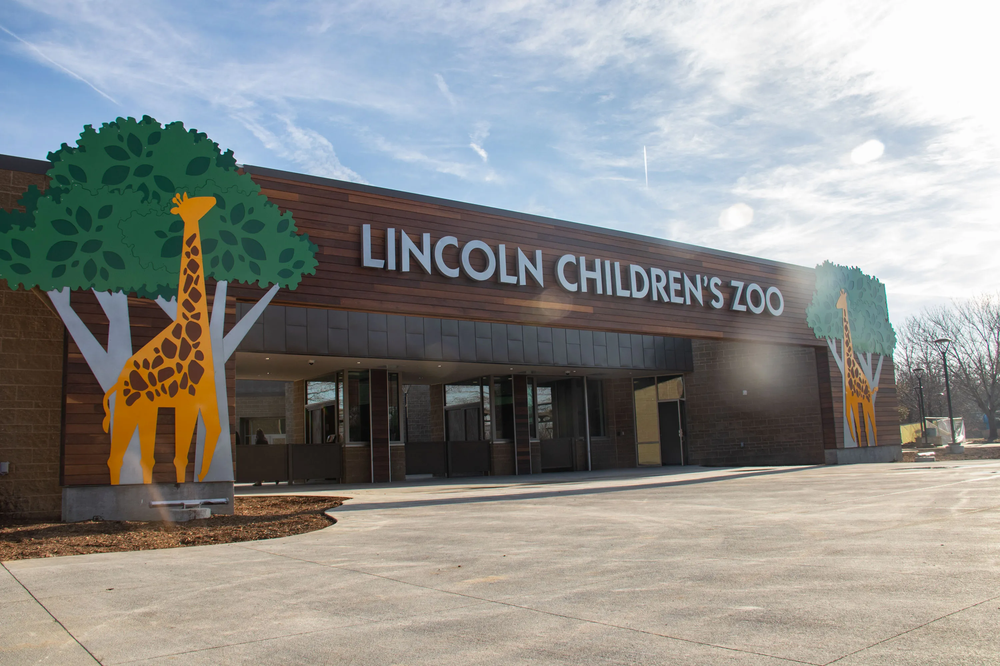

Welcome to Lincoln
Here are some of the best destinations

Lincoln Children's Zoo - a great place for friends and family to visit. The zoo has Giraffes, Cheetahs, Red Pandas, and so much more. More information here